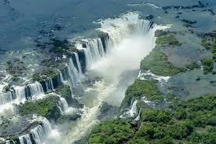
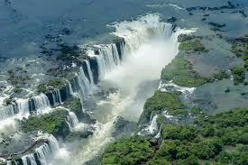

Portal oficial do turismo brasileiro. Descubra destinos incríveis, cultura rica e
experiências únicas pelo Brasil.
Explore Brasil - Descubra as Maravilhas do Nosso País
Explore Brasil: Sua Jornada Começa Aqui
Destinos que Encantam o Mundo
Região Norte, Região Nordeste, Região Centro-Oeste, Região Sudeste, Região Sul
forma de turismo responsável que ocorre em áreas naturais, com o objetivo de conservar o meio ambiente, promover o bem-estar das populações locais e proporcionar experiências educativas e interpretativas.
Turismo Cultural :
viagens motivadas pela experiência e conhecimento da cultura de um lugar, incluindo seu patrimônio histórico, artístico, arquitetônico, tradições, gastronomia, entre outros.

 
